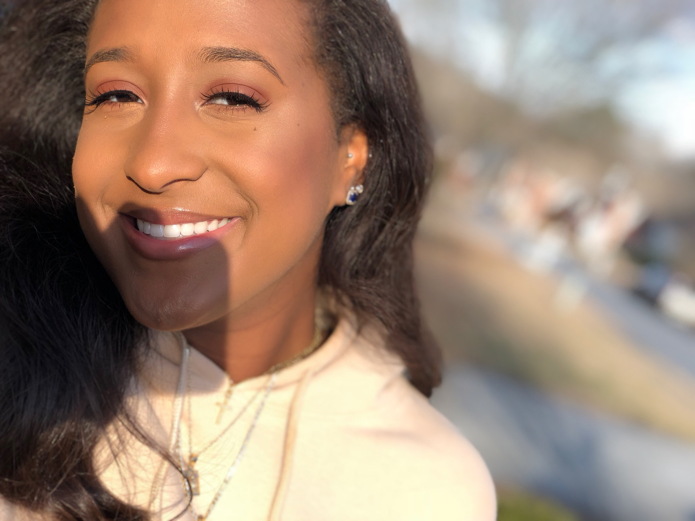

Amber Noelle's Bio:My name is Amber Noelle Bouie and I am 20 years old. I am currently a student at the University of Georgia majoring in Sports Management. I was born in Stone Mountain, GA before moving to Lawrenceville, GA in 2010. My family consist of 5 including my Mom (Lynn), Dad (Anthony), older brother (Anthony II), and dog (Coco Chanel). We moved to Gwinnett County when I was in elementary school because of a break in at our home. My parents wanted my brother and I to grow up in a safe environment that had an awesome school system. In high school I flourished when it came to sports and my grades. I cheered and danced throughout my four years while still remaining at 3.9 GPA. I loved my school and I basically lived there. I also participated in many clubs like Key Club and Student Government Association. Now in college I am an intern at the football recruiting office and apart of the Georgia Recruitment Team. | ME!

I love sports and it has been a part of my life since I was a child. My brother took basketball very serious and played all through middle and high school. My dad played when he was younger as well until his freshmen year of college. My dad got abducted into the Hall of Fame for high school athletes in New York. I cheered and danced until high school ended. I was a captain of both Varsity football and basketball. My senior year of high school I completely lost my voice cheering along the sidelines. I loved every second of cheering and I wish I was still doing it now. My biggest goal in the future is to become a sports agent/lawyer. I want to be able to help my clients with all of their needs. I don’t think it’s necessary for my client to only use me as their agent when I could also be their lawyer if anything would happen. I plan on getting hired at Roc Nation or CAA Sports working for big time athletes. I have been making videos on my desktop computer since 7th grade. I use to make videos about my braces experience. I have never been camera shy and I always wanted to be the center of attention. I kept this hidden from my family because I didn’t want them to say I couldn’t be on YouTube. I am extremely interested in continuing my YouTube channel with my roommate Jourdan. In 2017, my roommate and I made an interesting video about a college night adventure. This video got many hits in our community, but we took it down that next month. We both plan on really focusing on our YouTube channel and going in together on a camera to gain more exposure. Our channel would consist of lifestyle, beauty, and fashion videos. We want to be different from other college YouTubers and make 2 to 3 vlogs a week for a channel. Our channel would also feature special guest like other college YouTubers who go to UGA as well. Youtube Link |
|---|